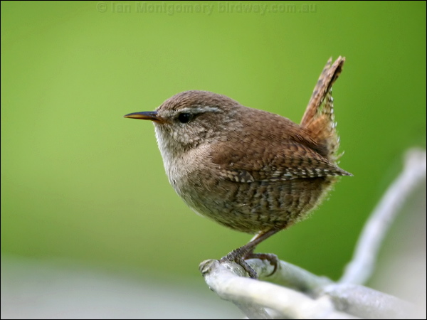

The wren is a tiny brown bird, although it is heavier and not as slim as the even smaller
goldcrest. Wrens are stocky, dumpy, almost rounded. They arerestless birds that are easily
recognised by their rich brown plumage and short cocked tail which they flick repeatedly.
The upperparts and flanks have dark barring and the pale eyebrow (supercilium) is prominent.
The underparts are paler with grey barring. The bill is brownish and the legs are flesh-brown.
For such a small bird it has a remarkably loud voice.
It is the most common UK breeding bird, although it suffers declines during prolonged,
severely cold winters.
Wrens eat spiders and insects which they find while hopping and dashing along the ground and probing in crevices with their long thin bill. Their scientific name, Troglodytes, means "cave dweller" in reference to this behaviour. When they do venture out into the open they dart from one place to another. They occasionally take seed or cheese from the ground feeder table.
Woodland, Farmland, Heathland, Urban and suburban
Wrens can be found across the UK in a wide range of habitats - woodland, farmland, heathland, moorland and islands. Most are found in deciduous woodland but it is least abundant in Scotland and northern England, with the smallest numbers found in upland areas. They are a regular visitor to most gardens.
You can see wrens all year round.